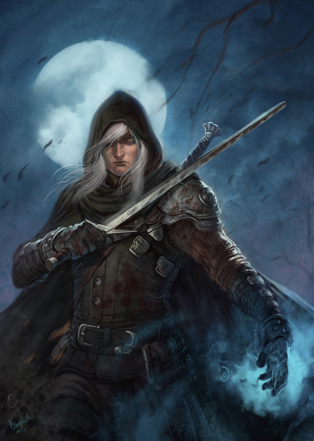
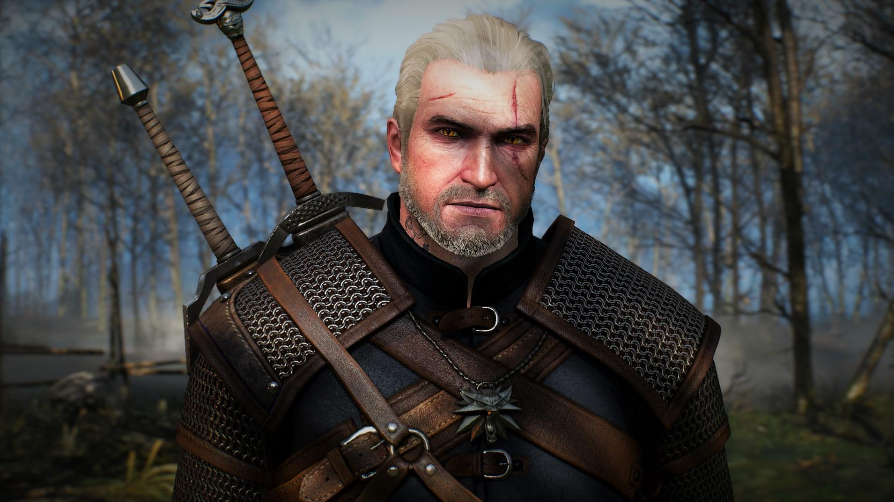

Geralt of Rivia was a legendary witcher of the School of the Wolf active throughout the 13th century. He loved the sorceress Yennefer, considered the love of his life despite their tumultuous relationship, and became Ciri's adoptive father.
Geralt Of Rivia
In the books Geralt story line is a little bit all over the place but for the most part he is trying to track down Ciri. Just like practically half the characters. At the end of Blood Of Elves Geralt is left half dead after he fights Vilgefortz, and heals in brokilon forest. After that he goes to Toussaint with some friends and has the time of his life, during this he thinks Ciri has died. In Lady Of the Lake he kills Vilgefortz and frees Ciri and Yennefer, But later dies in a row in Rivia.
In the Games Geralt Survives the row, after that the Wild Hunt come looking for Ciri but find Yennefer instead and kidnap her. Geralt cuts a deal with the Wild Hunt and trades his life with Yennefer's. Ciri eventually finds Geralt and saves him and that is when the chase for Ciri begins in the games.
Geralt in the Witcher 3